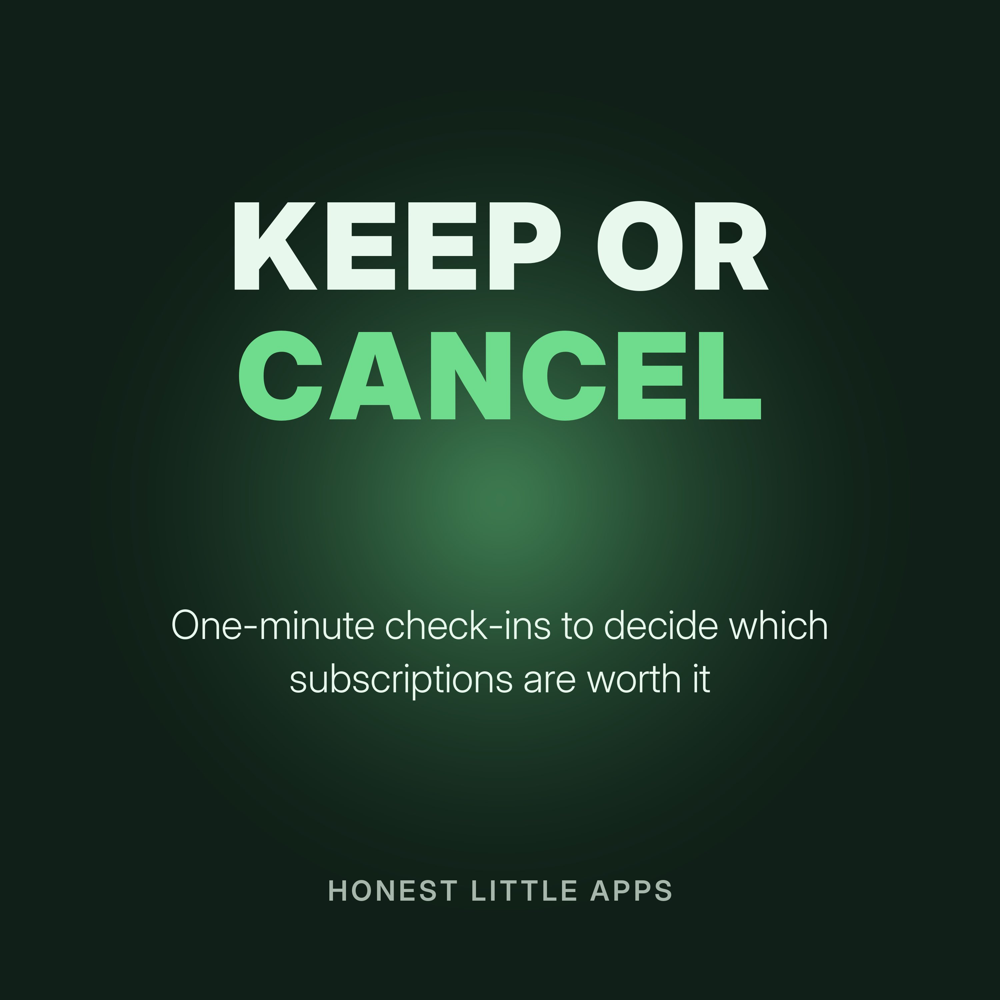

Keep or Cancel: A Subscription Check-In
One-minute episodes to help you decide which subscriptions to keep, which to cancel first, and when to act before the next charge. General money tips, not financial advice.
Made by Honest Little Apps, the makers of MoneyShield: Sub Tracker, an iPhone app that shows your subscriptions, renewal dates and which to cancel first. Narrated with a synthetic (text-to-speech) voice.
- Find them all firstYou can't decide about subscriptions you've forgotten.
- Monthly to yearlyA small monthly price adds up.
- The last-used testAsk one question for each subscription: when did I last use this?
- Cancel before the chargeMany subscriptions renew automatically.
- Annual plans, carefullyAnnual plans can be cheaper, but only if you'll really use them all year.